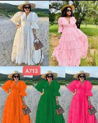
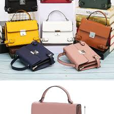
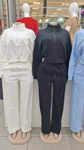
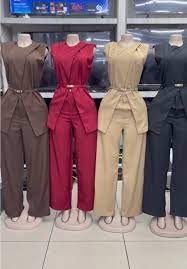

Latest Trends
Spring Fashion Trends
Spring brings fresh colors, lightweight fabrics, and floral patterns. At Bellema, we recommend pastel shades, flowy dresses, and light jackets. Pair these with comfortable sneakers or sandals for a balanced, trendy look.
Accessorizing 101
Accessories can completely transform your outfit. A simple dress can be elevated with statement earrings, a bold handbag, or a stylish belt. Remember: less is more. Choose one or two statement pieces to highlight your personal style.
Winter Wardrobe Essentials
Stay warm without compromising on style. Essential winter items include trench coats, knitted scarves, and ankle boots. Darker tones such as navy, grey, and burgundy dominate the season, but adding a pop of color through accessories keeps things fun and fresh.
Workwear Inspiration
Professional doesn’t have to mean boring. At Bellema, we recommend tailored trousers, crisp white shirts, and blazers in neutral tones. Mix in chic handbags or subtle jewelry for a confident office look that transitions easily into after-work events.